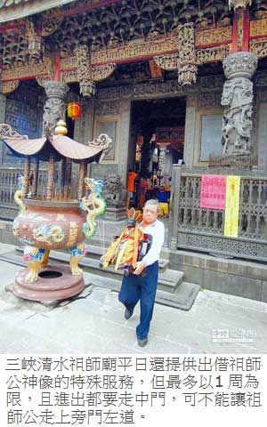

消災解厄 神明整尊捧回家
陳俊雄｜中國時報／新北市金馬新聞∣2014年5月31日
有「東方藝術殿堂」之稱的三峽清水祖師廟遠近馳名，卻保留出借祖師公神像讓信徒迎回鎮座的在地特色。廟方表示，祖師廟共有130多尊神像，想消災解厄的民眾可逕向廟方「借用」，但以1周為限，且要從中門進出、不可讓祖師公走上旁門左道。
平日擔任祖師廟解說員的秀川里長李楷瑞表示，清乾隆年間在三峽建造的祖師廟，一向是三鶯及大溪中庄、樹林柑園泉州移民的信仰中心，早期正月初六祖師爺聖誕時，還是由各庄頭輪流盛大作醮，宴請親朋好友一起來吃拜拜「逗熱鬧」，充滿農村社會的濃濃人情味。
當年各庄頭輪流舉辦祭典時，都會從祖師請來祖師爺神像鎮座，各庄頭輪流拜拜、看戲，好不熱鬧。戰後為了避免鋪張浪費，政府把各庄輪流舉辦作醮，改在正月初六當天統一祭祀。
雖然輪流作醮請客習俗在今日已不復見，但在前輩畫家李梅樹堅持下，祖師廟直到今日還是沒有常態性的法師、乩童進駐，也不在廟裡開設法壇問事求神。民眾想要問事，可以直接向廟裡商借神像，直接把祖師公請回家問個明白。
但李楷瑞也提醒，因為是請神，所以都要從祖師廟中門進出，可不能走「旁門走道」。至於借用並無表定價格，全由信徒隨喜添香，但最多只能出借1周。
李楷瑞說，祖師廟共有130多尊神像，全都安置在正殿供民眾迎請；神像尺寸有大有小，最大的祖師公神像超過60公分，若再加上座位則超過一公尺高，專在龍舟賽時現身坐鎮，讓三峽河風平浪靜、龍舟賽得以平安舉行。